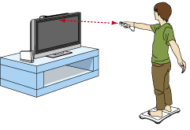

4 |
Preparación del control |
 |

Nota: Si el cierre de tu correa tiene un seguro, bájalo hasta que oigas un clic. Así evitarás que se suelte la correa.
La Wii Balance Board debe colocarse directamente frente a su televisión como se muestra abajo, de manera que el Wii Remote se encuentre entre 1 y 3 metros (3 y 10 pies) de distancia de la barra de sensores. El botón de encendido deberá estar orientado en dirección opuesta a la de la televisión. 
SIGA ESTAS INDICACIONES CUNDO USE LA Wii BALANCE BOARD:
Cuando uses la Wii Balance Board durante un juego, sigue el procedimiento a continuación.


|

 El indicador de encendido se iluminará de manera intermitente.
El indicador de encendido se iluminará de manera intermitente.
 |
 |
 |